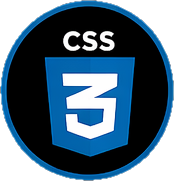

Personal Projects
These are projects I have worked on outside of coursework to practice and build on my skills.
Python
Older Python Project
Many of these projects were done or worked on during the Python for Programmers Course. They tend to be very rough and in some cases unfinished, as I moved on from simpler programs to try to do more advanced or ambitious project.
Included Projects
- Tkinter and GUI tests - (from the book from the Python course)
- Inventory Management System - An attempt to mimic the IMS we use at Target
- FileSorter - A program to practice manipulating files on the hard drive.
- BlackJack - The game BlackJack
- Monkey Math Calculator - Made for my kids (monkey math is number concatenation)
Python Projects
This is some more advanced projects I have worked on and am continuing to work on in my spare time as practice for Python and SQL. This repo employs some automatic formatting tools (Ruff and Black) that ensure the code written is up to formatting standards before submitting. I also have been working on the Readme and Version Logs to map out planned improvements and version improvements for these projects.
Included Projects
- Work Job Tracker - designed to track and report what jobs I'm assigned at work
Job Tracker — Web App
A migration of the Work Job Tracker from a desktop Python/Tkinter application to a full-stack web app. Features a FastAPI REST backend, a static HTML/CSS/JavaScript frontend, user authentication, shift management, and a reporting system with a mobile-first responsive UI.
Highlights
- FastAPI REST backend with MySQL database
- User authentication and job tracking
- Shift management and reporting system
- Mobile-first responsive frontend
Web Development

HTML Projects
This serves as a place to put HTML projects to practice with HTML, CSS, and JavaScript.
Included Projects
- Online Rendering of my Book
- Cribbage Scoring App
- Fallout Terminal Hacking Helper App
GitHub Pages for HTML Projects
TLDR Reader
A personal web app for reading, flagging, and permanently saving articles from the TLDR newsletter. Issues are browsed by day across five sections — This Week, Last Week, Archive, Reading List, and Saved Articles. Deployed to Azure Static Web Apps with Microsoft authentication and Azure Cosmos DB for per-user state. Article content is scraped daily via an automated ingestion pipeline.
Highlights
- Browse This Week and Last Week by day and newsletter edition
- Archive calendar: browse any past date with available articles
- Flag articles to a Reading List; star to permanently save them
- Microsoft (Azure AD) authentication with per-user cloud state
- Automated daily ingestion pipeline via scheduled scraper
Azure Static Page Host for TLDR Reader
PalletIQ WIP
A full-stack warehouse operations app covering Pull, Put, Pallet and Location ID lookups, and a visual Empty Locations map. Built from 20 years of warehouse floor experience with a four-tier role hierarchy, field-level permission gating, and a UI designed for hands-free scanning: numeric-first input, no blocking pop-ups, and every pallet and location ID a tappable link.
Core Functions
- Pull — all pull types driven by label scan with two-path verification
- Put — directed put-away with zone logic and manual put with safety checks
- Pallet ID and Location ID detail screens, reachable from any reference
- Empty Locations — aisle summary and visual zone-by-zone map
- Reservation locking with server-side timeout cleanup
CheatSheets
A curated library of single-page technical reference sheets for programming languages, CS concepts, and developer tools. Each sheet is formatted to fit on an 8.5" × 11" page with a dark mode default and a print-optimized light mode. A print aggregator page uses fetch() and DOMParser to inject multiple sheets and generate PDFs directly in the browser.
Completed Collections
- Concepts (14 sheets)
- RegEx (9 sheets)
- HTML (15 sheets)
- CSS (25 sheets)
- SQL (22 sheets)
- Markdown (3 sheets)
- Mermaid (12 sheets)
TypeScript & React Native
DragonLedger: Heroes
A D&D 5e 2024 character sheet and DM companion app for iOS and Android, built with React Native (Expo) and TypeScript. Designed engine-first — all game logic is implemented as pure TypeScript functions with full Jest test coverage before any UI is written. Features a full SQLite schema for character persistence, a RevenueCat-managed entitlement system (Free / Adventurer / Pro tiers), and an event-sourced state architecture designed for future local WiFi and cloud multiplayer sync via Supabase.
Highlights
- HP, ability scores, movement, inventory, spell slots, and combat action economy engines
- DM mode with encounter builder and initiative tracking
- RevenueCat in-app purchase integration
- Local WiFi and cloud multiplayer sync (in development)
Family Passport Map WIP
A family-friendly web app for tracking which places you and your family have visited. Features an interactive US map where you click states to mark them visited, per-person tracking with custom colors and profile pictures, a side-by-side compare view, and a list view showing who has been where. Installable as a PWA for phone, tablet, and desktop.
Highlights
- Interactive clickable US state map with per-person colors
- Compare view for side-by-side family member maps
- List view with profile-picture icons per visited state
- Installable PWA with responsive design
Azure App Service Host for Family Passport Map
Animated Spells — Foundry VTT Module
A Foundry VTT module that automatically plays visual animations when spells from the official D&D 5.5e content packs are cast. Intercepts spell rolls and plays matching JB2A animations — projectiles fly from caster to target, area-of-effect templates fill with animated effects, and self-targeted buffs pulse on the caster's token. No manual macro setup required.
Highlights
- Automatic spell-to-animation mapping via compendium UUIDs
- Supports projectile, template, self, and emanation delivery
- Compatible with multiple official D&D content packs
- Built on Sequencer and JB2A animation APIs